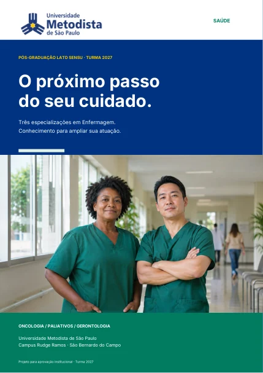

← Voltar aos cursos
METODISTA SAÚDE · GUIA GRATUITO
Encontre a especialização que faz sentido para a sua prática.
Três áreas. Um guia para comparar com clareza.
- O que você vai aprender em cada curso.
- Como funcionam as aulas e as atividades práticas.
- Coordenação, calendário e investimento previsto.

Oncologia
Cuidados Paliativos e Terapias da Dor
Gerontologia, Cuidado e Atenção Domiciliar
O guia apresenta a proposta acadêmica. Datas, inscrições e condições em validação serão confirmadas pela instituição.
Baixe seu guia gratuito
Preencha os dados abaixo para liberar o PDF nesta página.
GUIA LIBERADO
Boa leitura e boas escolhas.
Seu interesse foi registrado. Clique abaixo para baixar o guia completo.
Baixar meu e-book em PDF ↓Precisa de orientação? (11) 4366-5937